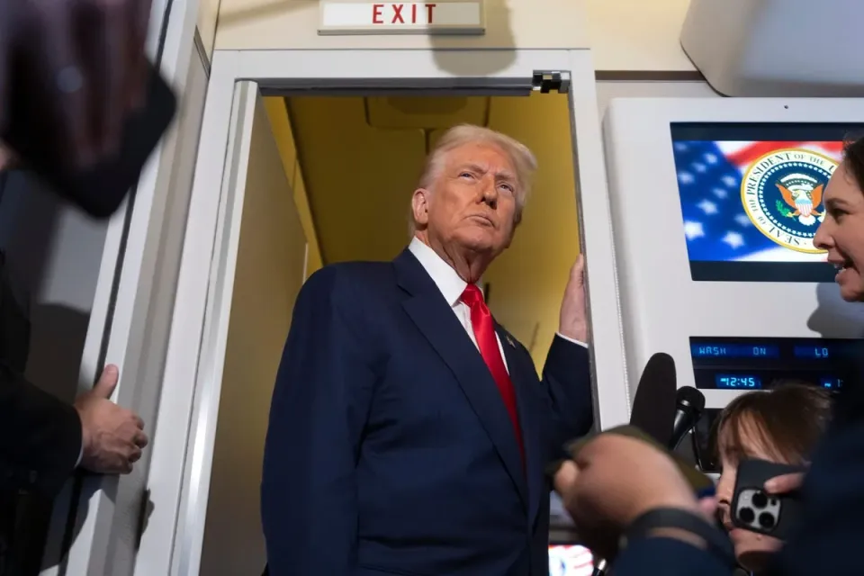

世界苦茶10月31日新闻 | 47条 | 习特会未提台湾问题

习特会未提台湾问题 | 特朗普暗示恢复核试验 | 中美防长赴马国参加会议 | 习特会短暂外贸停战 | G7推动稀土联盟
苦茶数据
美元兑人民币：7.11（昨日7.09，前日7.10）
美元兑日元：154.05（昨日152.49，前日151.84）
上证指数：3961（昨日4017，前日3995）
标普500指数：6822（昨日6890，前日6890）
比特币：109290（昨日110929，前日112629）
布伦特原油：64.60（昨日64.53，前日64.36）
中国新闻
• 习特会未提台湾问题 或留待特朗普访华再议。
睽违六年的“习特会”在韩国釜山登场，会议出乎外界意料未提及台湾问题。受访学者分析，美国总统特朗普更重视的还是稀土、大豆、芬太尼等三大问题，因此避免在本次元首峰会上将台湾问题“核心化”，留待明年4月访华时再做表述。特朗普星期四在韩国釜山，与中国大陆国家主席习近平举行1小时40分钟的双边会谈。在此之前，不少美国媒体预料，北京已不再满足于“不支持台湾独立”的美国一中政策表述，将力求特朗普在本次会面时表态“反对台独”。在习特会登场前，台湾外交部长林佳龙当天上午受访时，特别表示会密切关注，并强调“对台美关系有信心”，也有密切沟通管道，且台美双方合作交流密切。
• 中美防长赴马国参加亚细安会议 北京未确认是否会晤。
中美防长本周到马来西亚出席亚细安防长会议，对于双方会否会面，中国国防部并未正面回应，仅称希望中美共同构建平等尊重和稳定正向的两军关系。中国国防部新闻发言人张晓刚星期四在例行记者会上宣布，中国防长董军将于当天至星期天赴吉隆坡，出席第12届亚细安防长扩大会及相关会议。美国战争部长赫格塞斯则在星期三晚间抵达吉隆坡，并已与马来西亚防长莫哈末卡立诺丁会面，讨论了南中国海等议题。在被问及中美防长是否计划会晤，张晓刚说，中国对发展中美两军关系持开放态度，希望美国与中国相向而行，共同构建平等尊重、和平共处、稳定正向的两军关系。
印太新闻
• 韩国流行组合NewJeans在与所属经纪公司的诉讼中败诉。
韩国女团NewJeans未能在与经纪公司之间的诉讼中胜诉 韩国女团NewJeans未能通过司法途径解除与其所属经纪公司Ador的合约。首尔中央地方法院周二裁定，该团与公司签订的合约有效期至2029年，维持原状。团内五名成员——Hanni，Hyein，Haerin，Danielle和Minji——去年曾单方面宣布退出公司，指控遭到不当对待与操控。当地媒体报道称，该团表示将对裁决上诉。NewJeans称“不可能回到Ador并像往常一样继续活动”。法院驳回了NewJeans关于前Ador社长兼团体导师闵熙珍被解职构成违约的主张。NewJeans认为她的被解职破坏了他们与公司的信任。
• 中日就在南韩举行首脑会谈进行协调。
日本首相高市早苗10月30日前往南韩庆州，出席亚太经济合作组织首脑会议。当天将与南韩总统李在明举行首次首脑会谈。目前还在就10月31日与中国国家主席习近平举行会谈展开协调。高市早苗将与李在明讨论包括东亚安全保障在内的地区局势。双方还将确认，为实现朝鲜「完全无核化」，将继续保持日韩、日美韩合作。还将推动加快日韩政府之间的磋商，讨论两国共同面临的少子老龄化及地方经济振兴问题。上一次日韩首脑往来是日本前首相石破茂在卸任前的9月底前往南韩釜山，与李在明举行了会谈。
• 韩国的李在会见习近平前呼吁与中国开展“友好竞争”。
韩国总统候选人李在明在习近平会面前呼吁与中国“友好竞争” 李在明表示，首尔旨在以“平等合作”为基础与北京在贸易、供应链和交流方面推进合作 李在明的上述言论出现在中国官方新华社刊登的一篇采访中，发布时间为中国国家主席习近平周四抵达韩国釜山前一天。这是习近平时隔11年对韩国的首次访问，上一次访问为2014年7月。在采访中，李在明表示希望推动双边关系“成熟发展”，同时指出，随着中国工业竞争力和高科技能力的迅速提升，两国企业之间的竞争也在加剧。新华社报道称，他说：“不过，我认为韩国和中国可以集思广益，在’友好竞争’和‘平等合作’的基础上使战略伙伴关系成熟并向前发展。
• 韩美达成贸易协议 特朗普同意共享核动力潜舰技术。
韩美达成贸易协议 特朗普同意共享核动力潜舰技术 2025年10月30日经数月谈判后，美国与韩国最终敲定一项总额达3500亿美元的投资与贸易协议：首尔将向美国投资3500亿美元，美国则下调对韩汽车关税。此外，特朗普也宣布同意韩国取得建造核动力潜舰的技术。周四，美国总统特朗普在“真实社群”平台上表示，未来将与韩国共享美方掌握的技术，允许韩国能够建造一艘核动力潜舰；潜舰会在宾州费城制造，韩国企业“韩华集团”去年收购了当地的造船厂。
• 高市对川普表示禁运俄罗斯产LNG有困难。
日本首相高市早苗与美国总统川普在10月28日的磋商中，提到了俄罗斯远东的石油和天然气开发项目「萨哈林1号」和「萨哈林2号」。高市已向川普传达，日本难以禁运俄罗斯产液化天然气。多位日本政府高官透露了上述消息。高市10月28日在东京元赤坂的迎宾馆与川普举行了会谈。美国为了对持续进攻乌克兰的俄罗斯加强施压，要求七国集团配合实施对俄能源禁运。川普在首脑会谈的工作午餐环节再次向高市提出了禁止进口俄罗斯液化天然气的要求。如果G7实施禁运，俄罗斯的能源收入将减少。
**• 受美国政府关门以及特朗普政府削减资金影响，自由亚洲电台将于10月31日关闭其新闻业务。自由亚洲电台将开始关闭海外分社，裁员并支付遣散费。 **
科技新闻
• 安世半导体前CEO被指拟将设备专利转移至中国。
中国和荷兰围绕安世半导体的僵局至今未解，知情者透露，荷兰政府上月罕见接管这家欧洲晶片制造商的部分原因是，前中国籍首席执行官张学政计划运走公司位于德国和英国工厂的一些机器。彭博社引述要求匿名的知情者报道，除了运走设备外，张学政也打算把专利从荷兰转移至中国。知情者也透露，张学政计划裁减公司40%的欧洲员工。知情者称，这些新细节揭示张学政为了母公司闻泰科技的利益，而阻碍安世欧洲业务的种种举措。张学政也是闻泰科技的创始人。报道说，荷兰看守政府对张学政“掏空”安世在欧洲业务的担忧，有助于解释为何它在没有事先征得欧洲合作伙伴同意的情况下便采取行动。路透社早前也引述知情者报道，荷兰政府接管安世半导体。
• 国际空间站庆祝连续25年有人类在轨不间断存在。
国际空间站庆祝轨道上连续有人居住25周年 佛罗里达州卡纳维拉尔角 —— 这是前所未有的太空纪录：人类在地球以外持续生活了整整25年，中间没有哪怕一刻的中断。国际空间站本周末迎来连续有人居住的四分之一个世纪，曾接待近300名访客——大多是职业宇航员，也有偶尔的太空游客和电影导演。首批常驻人员于2000年11月2日打开舱门。
• 中国表示正按计划在2030年前实现载人登月，并将在空间站任务之前完成。
中国周四表示，正按计划在2030年前实现载人登月，同时公布将前往其空间站的新一批航天员，这是该国成为航天探索领导者雄心的一部分。“中国目前用于实现载人登月的各项研制任务进展顺利，”中国载人航天工程发言人张敬波说，他列举了长征十号火箭，登月服和探测器等为该工作取得的成果。“我国2030年前实现载人登月的既定目标是坚定不移的。” 中国也在准备发射最新一批航天员，他们将参与正在进行的天宫空间站建造任务。每个乘组在空间站内逗留六个月，开展科研。
**• 谷歌营收首次突破1000亿美元 利润增长33% **
谷歌母公司Alphabet公布的第三季度财报超出分析师预期，季度营收1023.5亿美元，高于预期的998.9亿美元，首次超越1000亿美元，同比增长16%。净利润为 349.79 亿美元，较上年同期的 263.01 亿美元增长 33%。其中谷歌的搜索业务创造了 565.6 亿美元的收入，比上一年增长了 15%。得益于人工智能的强劲需求，其云计算业务发展势头良好，云计算收入为 151.5 亿美元，比去年同期增长 35%。该公司同时宣布上调 2025 财年的预期资本支出，“随着业务增长和云客户需求的增加，我们预计 2025 年的资本支出将在 910 亿美元至 930 亿美元之间”。尽管支出比年初的计划仍多出超100亿美元，Alphabet的股价仍在盘后大幅上涨。
• 特朗普表示与习近平的英伟达芯片会谈未涉及Blackwell。
美国总统特朗普表示，他未与中国国家主席习近平讨论批准英伟达公司Blackwell芯片对华销售事宜，这抑制了关于华盛顿将允许向全球最大半导体市场出口这款强大AI加速器的猜测。特朗普称他与习近平大致讨论了英伟达对华供货问题，该芯片制造商将继续与北京方面磋商，中方已劝阻国内企业使用华盛顿已批准销售的英伟达低性能处理器。“我们确实讨论了芯片，”特朗普在空军一号上对记者表示。“他们将与英伟达及其他企业商讨芯片采购。”当被具体问及美国是否会批准出口性能降级的Blackwell加速器时，这位美国总统回答：“我们讨论的不是Blackwell。”
经济新闻
• 中美稀土战暂告休兵 缓解稀土管控冲击供应链担忧。
中美元首峰会星期四落幕后，两国的稀土战宣告暂时休兵，中国暂缓实施稀土出口许可证措施一年，缓解各国对中国稀土管控冲击供应链的担忧。受访学者认为，这是中美元首峰会最重要的成果，因为这项进展的影响不仅限于中美两国。美国总统特朗普星期四与中国国家主席习近平于韩国釜山举行会谈后，在空军一号上接受媒体采访时称，“所有稀土问题都已解决”，中国将暂缓实施稀土出口许可证措施至少一年，并且可再延长。中国商务部当天下午介绍中美上周末在吉隆坡的经贸磋商结果时证实，将暂停实施10月9日公布的相关出口管制等措施一年，并将研究细化具体方案。
• 亚马逊刚刚解释了为何裁掉1.4万名员工，这并非你所预料的。
亚马逊首席执行官安迪·贾西对于公司裁员1.4万人的解释？不是为了钱。甚至不是为了人工智能，而是“文化”。贾西在周四公司的财报电话会议上回答分析师提问时表示，本周的裁员通告“并不是出于财务驱动，也甚至不是出于人工智能驱动——至少现在还不是。是出于文化。
• 本周第三次，4名共和党参议员与民主党人一道就关税问题谴责特朗普。
本周三次投票中，参议院虽由共和党掌控，但以微弱多数罕见地两党联合谴责特朗普动用紧急权力对加拿大、巴西及其他国家实施关税。周四通过的最后一项议案——撤销特朗普在四月宣布的全球关税——以51比47获通过。民主党在四名共和党参议员的支持下通过该议案：缅因州的苏珊·柯林斯、阿拉斯加的莉萨·穆尔科斯基、肯塔基的米奇·麦康奈尔和兰德·保罗。这项议案的主要发起人，弗吉尼亚州民主党参议员蒂姆·凯恩在投票前表示：“总统实施关税的方式只会导致混乱。”凯恩称，特朗普关税政策背后的策略可归纳为“对所有人宣布关税，然后再宣布可能暂缓或推迟执行，同时我去一对一谈判达成协议。
• 巴西对美中大豆协议置之不理，称其只是季节性贸易。
巴西大豆生产者协会主席毛里西奥·布丰表示，华盛顿与北京周三公布的采购量不应令巴西出口商惊慌，认为这是正常供给周期的一部分。“这是每年都会发生的一个动作，”布丰在接受CNN Money Brazil采访时说。“美国现在有大豆可供出售，因为他们刚收割。而巴西则在播种新作物，库存偏低。” 在美国总统唐纳德·特朗普与中国国家主席习近平在韩国会晤后公布的这项协议，标志着对陷入数月中国订单暂停困扰的美国农民可能的转机。根据该协议，中国将立即恢复农产品购买，同时降低某些贸易壁垒和进口关税。
• 大众集团今年第三季度出现亏损。
大众汽车周四宣布，今年7月至9月的亏损总额超过10亿欧元。亏损主要是跑车子公司保时捷造成的。广告 大众是欧洲规模最大的汽车生产商，旗下拥有斯柯达和奥迪等品牌。大众汽车周四宣布，此次季度亏损约10.7亿欧元，是2020年初夏以来的首次。当时，新冠疫情对经济造成了严重冲击。大众汽车首席财务官安特利茨解释说，大众汽车目前面临的困境“主要源于关税上调、保时捷产品战略调整以及保时捷资产减值”。今年9月，保时捷宣布推迟几款纯电动车型上线，同时专注燃油车和混合动力汽车。
• 本田墨西哥工厂因安世半导体争端停产。
本田10月29日公布，已在墨西哥停止生产汽车。复产方面目前尚无眉目。由于荷兰和中国围绕总部位于荷兰的中资半导体制造商安世半导体产生对立，零部件出现短缺。这是日本汽车制造商首次明确受到这一问题的影响。在墨西哥，本田于28日停止生产，在美国和加拿大也从27日开始调整生产。本田并未公布减产规模以及持续时间。北美占本田全球销量的四成，如果北美生产长时间受影响，可能会导致业绩下滑。此次停产的是位于墨西哥中部的塞拉亚工厂，该工厂是本田向美国出口汽车的重要基地。工厂的年产能达到20万辆，主要生产SUV“HR-V”等车型。
• 随着经济经受住贸易冲击，欧洲央行维持利率不变。
欧洲央行周四将关键利率维持在2%，欧元区经济仍显示出韧性，通胀在央行目标附近大致保持稳定。此决定与决策者所给出的“货币政策处于良好位置”的指引相一致，给了他们空间等待将包含欧洲央行对2028年通胀首次预测的年终预测。经济在今年第三季度增长0.2%，高于预期，而初步数据显示10月通胀回升至2.2%，缓解了对可能低于目标的担忧。
• 比亚迪季度利润下滑，因中国销量疲软侵蚀了出口增长。
中国电动汽车领军企业比亚迪报告称，第三季度利润下降32.6%，因国内市场销量放缓和降价抵消了其海外强劲表现。广州深圳这家总部位于深圳的公司在周四向香港和深圳证券交易所提交的声明中表示，截至九月的三个月内利润降至78亿元人民币，而去年同期为116亿元。尽管如此，这仍较前一季度的64亿元增长22.6%。同期季度营收同比下滑3.1%，至1950亿元人民币。
• G7应对中国稀土主导地位 北京批“小圈子”。
G7应对中国稀土主导地位 北京批“小圈子” 2025年10月30日G7能源部长周四在加拿大举行会议，首要日程将是遏制中国在关键矿产上的主导地位。民主政体的发达工业国寻求更为可靠的来源与途径。发达工业国G7对中国掌握关键矿产的产业链敲响警钟。从光伏电池板到精准导弹，无不涉及。美国总统特朗普周四在韩国与中国国家主席习近平会晤后宣布，就稀土达成协议，为期一年，每年再谈判。今年6月加拿大的G7峰会上，七国领导人发起一项“关键矿产行动计划”，呼吁使供应链多样化，以推动“共同的国家和经济安全利益”。
• 美中大豆协议预示将开展年度会谈，农民期盼贸易稳定。
中国恢复购买美国大豆给农民带来宽慰，但永久性协议仍难达成 虽然习近平与特朗普的会谈帮助结束了大豆交易停滞，分析人士表示农业将继续成为多项争议点之一。中国恢复购买美国大豆确实缓解了美国农民的担忧——他们数月来担心最大买家可能不会回归——但分析人士预计，未来几年农产品贸易将成为双边谈判的常规议题。大豆协议是两人自特朗普今年一月重返白宫后首次面对面会晤后达成的一系列协议之一。其他协议包括双方同意将芬太尼关税降至10%；中国基于为期一年的协议承诺不实施稀土管制；就向中国出口芯片与英伟达的讨论；推迟对美国发起的301条款调查；以及特朗普将在四月访华。
• 中国表示将与美国合作，解决与TikTok相关的问题。
中国表示将与美方合作妥善解决与抖音有关的问题 美国总统唐纳德·特朗普周四与中国最高领导人习近平会晤，做出了一系列决定以缓和贸易紧张局势，但未就抖音的所有权达成协议。会后，中国商务部表示：“中国将与美国一道妥善解决与抖音相关的问题。”未就该受欢迎的视频分享平台在美国命运的不确定性取得何种进展提供细节。特朗普政府此前一直暗示，可能已与北京就让抖音继续在美运营达成协议。
• 日本央行维持0.5%政策利率，继续观望关税影响。
日本银行在10月30日召开货币政策决定会议上，决定将作为政策利率的无担保隔夜拆借利率诱导目标维持在0.5%。自1月会议决定将该利率上调至0.5%后，日银已连续6次会议维持不变。日银将继续关注美国关税政策对日本经济造成的影响。在9名政策委员中，审议委员高田创和田村直树反对维持利率不变。继9月的会议后，两人此次再次提议将利率上调至0.75%，但因多数人反对而被否决。高田主张「基本实现了物价稳定目标」，田村则指出「物价上涨风险正在加强」。关于美国经济，日银认为关税的影响尚未明显显现。
• 印度称获得从中国进口稀土磁体的许可证。
印度外交部周四表示，印度公司已获得从中国进口稀土磁体的许可证，这表明北京在出口管制方面有所放松。稀土是由17种元素组成的一组矿物，在汽车、飞机和武器制造中发挥至关重要的作用。在中美贸易紧张局势中，稀土已成为中国最有力的筹码之一。印度外交部发言人兰迪尔·贾斯瓦尔在新闻发布会上作出了上述宣布，但没有透露获得批准的公司、许可证数量或附加条件等细节。虽然稀土元素并不稀缺，但中国在将这些矿物加工成磁铁的技术方面保持着近乎绝对的优势。今年，北京收紧对主要经济体的稀土加工材料出口，以加强地缘政治影响力。
俄乌战争
• 俄罗斯占领的卢甘斯克州一座火力发电厂发生火灾，据报道导致大范围停电。
独立媒体Astra10月30日报道，位于俄罗斯占领的乌克兰卢甘斯克州的一座火力发电厂发生火灾，导致该地区大范围停电。报道称，位于什恰斯季亚市附近的卢甘斯克火力发电厂发生故障，锅炉房和泵站停运。俄罗斯任命的卢甘斯克被占区负责人列昂尼德·帕谢尼奇在电报上称，“共和国的大规模停电是由电网事故引起的”。帕谢尼奇表示已召集保障地区供电安全指挥部紧急会议。乌克兰记者安德里·察普连科报道说，发电厂遭到“击中”。乌克兰方面尚未对该事件发表评论。什恰斯季亚自2022年起被俄罗斯占领。
• 基辅一处邮局发生爆炸，造成5人受伤。
基辅索洛米安斯基区一邮局10月30日发生包裹爆炸，造成五名员工受伤，基辅警方通报。警方称，“事件导致五名邮政工作人员受伤，医务人员正在为他们提供救治。现场有侦查小组，警用爆炸物专家和医护人员在工作。事件所有情况正在查明中。” 国有邮政公司Ukrposhta首席执行官伊霍尔·斯米良斯基在Telegram上表示，爆炸发生在Ukrposhta的一处营业网点。“事件发生在检查禁止邮寄物品的程序中，”他写道。
• 特朗普称习近平同意与美国“共同努力”结束俄罗斯对乌克兰的战争。
美国总统唐纳德·特朗普在10月30日表示，在两人在韩国会晤后，中国国家主席习近平同意与华盛顿合作，推动结束俄罗斯对乌克兰的战争。尽管北京一直声称在这场战争中保持中立，但其持续向莫斯科供应双用途商品并购买俄罗斯石油，这为克里姆林宫的战争行动提供了重要收入。“我们谈了很久，”特朗普告诉记者。“我们都同意双方陷入激烈交战，有时你得让他们打——疯狂——但会帮助我们，我们将在乌克兰问题上共同努力。我们也没太多其他可做的了。
• 随着俄罗斯发动大规模导弹和无人机袭击，乌克兰各地紧急停电。
救援人员在2025年10月30日夜间俄罗斯对乌克兰发动大规模导弹和无人机袭击期间，一栋居民楼外展开救援。编者按：此为持续发展中的报道，正在更新中。当地当局10月30日报告，由于又一次针对能源基础设施的夜间大规模俄罗斯导弹和无人机袭击，乌克兰“所有州”已实施紧急停电。袭击造成3人死亡，至少27人受伤。乌克兰最大的私营能源公司DTEK表示，俄方部队袭击了该国多个地区的热电厂。“袭击导致设施起火并造成发电厂设备损坏。袭击后，能源工作人员立即开始进行损害评估和恢复工作，”DTEK说。
世界新闻
• 查尔斯三世国王剥夺了安德鲁王子的头衔并将他赶出王室住所。
伦敦——白金汉宫周四表示，查尔斯三世国王将剥夺其弟安德鲁王子的剩余头衔，并将他从皇家住所驱逐。宫方在一份声明中称，安德鲁将被称为安德鲁·芒巴顿·温莎，不再以王子身份称呼，他将从皇家小屋搬入“私人住所”。此举是在安德鲁与被定罪性犯罪者杰弗里·爱泼斯坦的关系被披露后作出的。自本月早些时候他因与爱泼斯坦的友谊以及爱泼斯坦一名受害者维吉尼亚·罗伯茨·吉弗里提出的指控而放弃使用约克公爵头衔后，宫内外对将他逐出皇家小屋的压力一直在增加。但国王进一步采取了行动，剥夺了自出生起作为已故女王伊丽莎白二世子女所享有的王子称号。宫方表示：“尽管他继续否认对他的指控，但这些处分被视为必要。陛下王后谨在此明确表示，他们。
• 美国《平价医疗法案》保费飙升，直接影响美国人，没有补贴的医疗保险将难以负担。
据Axios报道，人们预期的《平价医疗法案》保费激增问题本周开始浮出水面，2026年医保选项的预览显示，消费者可能将承担数千美元的额外费用。ACA的公开注册将在周六开始，如果国会不延长疫情期间提升的补贴，打算续保的人将面临保费上涨和补贴减少的双重压力。共和党人仍拒绝民主党提出的将补贴延期纳入重启政府协议的要求。根据“凯撒家庭基金会的分析，全美范围内，保险公司正在将市场医保的月保费平均上调26%。弗吉尼亚的医保市场已开始向居民发送续保通知，显示保费上涨幅度在4%到40%之间。
• 梅洛尼推动彻底改革意大利司法体系的提议获得议员支持。
意大利参议院周四通过了总理乔治亚·梅洛尼的旗舰司法改革方案，这标志着这一右翼改造国家司法体系计划取得了重大进展。参议院以112票赞成、59票反对、9票弃权的结果通过了这项宪法修正案，官员称这是第四次也是最后一次审议。司法改革是梅洛尼政府的关键举措之一，另有旨在加强总理权力的计划，二者将重新定义意大利各政府分支之间的权力平衡。
• 数十万极端正统派以色列人抗议强制征兵。
数十万极端正统派以色列人抗议征兵 数十万极端正统派犹太以色列人在耶路撒冷参加抗议，反对对宗教学生免服兵役法律豁免进行修改。几乎所有教派和派系的极端正统派社区成员都参加了这场被称为“百万大游行”的活动。自以色列建国以来，全日制就读于宗教学校的学生一直可获征兵豁免，尽管社区中也有部分成员服役。随着加沙战争爆发，要求他们承担更多责任的呼声愈加强烈。在今年规模最大的几次反征兵抗议之一开始前，耶路撒冷及周边道路已被封闭。此次集会将构成以色列人口约14%的这个分散社区的各个群体聚集在一起。将他们团结起来的不仅是反对扩大征兵范围的动向。
• 法官将审理要求在政府停摆期间强制政府继续为“补充营养援助计划”提供资金的请求。
周四，波士顿联邦法官在听审中对特朗普政府的主张表示怀疑：因政府停摆而首次暂停食品援助项目数百万人的救助金是合理的。就25个由民主党控制的州请求继续拨付资金一案的听证会上，联邦地方法官英迪拉·塔尔瓦尼对律师表示，如果政府负担不起这项开支，应当有一套程序可遵循，而不是简单地暂停所有救助金。“这些步骤包括找到一种公平的方式来减少救助金，”塔尔瓦尼说道。塔尔瓦尼由时任总统奥巴马提名担任法官。塔尔瓦尼表示，她预计将在周四晚些时候作出裁决，并倾向于要求政府把数十亿美元的应急资金用于SNAP。她说，这是她对国会在某机构拨款耗尽时意图的理解。
• 特朗普推动在全国范围内终止对跨性别青少年的医疗护理。
特朗普推动在全国范围内终止对跨性别青少年的医疗护理 特朗普政府提出的卫生与公众服务部新方案将大幅限制跨性别青少年获得性别肯定护理的渠道。NPR获得了一份拟议规则的草案文本，该草案将禁止联邦Medicaid为18岁以下跨性别患者提供的医疗护理支付报销。该草案还将禁止儿童健康保险计划为19岁以下患者支付报销。另一项拟议规则则更进一步，阻止对在提供儿科性别肯定护理的医院的任何服务给予Medicaid和Medicare资金支持。据医疗保险与医疗补助服务中心的一名雇员称，这些规则正准备在11月初对外公布。该雇员要求NPR在报道中不使用其姓名。
• 法国议会史上首次支持由勒庞推动的极右翼法案。
法国国民议会周四通过了玛丽娜·勒庞所属的国民联盟提出的一项议案，这是历史上首次，引发了关于极右政党正常化风险的疑问。在一场引人注目的会议上，185名议员投票赞成这项无约束力的决议，决议敦促政府废除1968年与阿尔及尔达成的、便利阿尔及利亚人移民法国的协议。共有184名议员主要来自左翼阵营投票反对。国民联盟推动的该决议以微弱多数获得通过，得益于部分右翼和中间派议员的决定性支持，也由于许多来自总统埃马纽埃尔·马克龙所属政党的议员未出席投票，原因不明。
• 马克龙的支持率降至历史最低点。
根据周四公布的一项新民调，埃马纽埃尔·马克龙已成为过去50年里支持率最低的法国总统。该由维里安集团对1000名受访者进行的民调并刊发于保守派日报《费加罗》，显示马克龙的支持率仅为11%，与该机构有记录以来的最低值持平。此前的“纪录保持者”是马克龙的直接前任、前上司弗朗索瓦·奥朗德，他在2016年底的支持率也降至11%，并在不久后宣布不再竞逐连任。按维里安的衡量标准，自该民调机构及其前身自上世纪70年代初开始为《费加罗》每月进行民调以来，马克龙与奥朗德并列为最不受欢迎的法国总统。
• 卢浮宫珠宝盗窃案再拘捕5人。
更多逮捕随卢浮宫珠宝盗窃案调查加深而出现 巴黎——周四，警方对卢浮宫窃贼的围捕进一步收紧。巴黎检察官表示，在王冠珠宝劫案中又有五人被抓获——其中一名嫌疑人与案发现场的DNA有关——搜捕范围扩大到市区及郊区。当局称，法媒所称“突击队”四名疑犯中已有三人被拘留。巴黎和毗邻省份塞纳-圣但尼的深夜行动使被捕人数增至七人。检察官洛尔·贝库奥在RTL表示，一名被拘者被怀疑属于10月19日白天闯入阿波罗长廊的胆大四人组；其余被拘者“可能知晓事件如何发生”。贝库奥称这是一场“非常规动员”——约100名侦查人员每天工作，已分析约150份法医样本。
• 英国政府就COP30森林承诺的成本产生分歧。
英国政府在是否为一项旨在保护热带森林的旗舰环境承诺出资问题上出现分歧，这可能危及首相基尔·斯塔默在巴西举行的联合国气候大会COP30上的潜在宣布。斯塔默上周确认他将出席下月在亚马逊城市贝伦举行的COP30领导人峰会。会议将由巴西总统路易斯·伊纳西奥·卢拉·达席尔瓦主持，卢拉是这位英国首相的密切盟友。卢拉议程的核心是一项新计划，拟设立一个最高规模达1250亿美元的基金，该基金向捐助国和私营部门支付回报，同时支持热带森林国家——该项目被称为“永恒热带森林机制”。巴西已承诺首期10亿美元，并呼吁英国及其他盟友提供支持。
• 欧盟危机应对特使称，应按计划推进建立联合情报机构。
布鲁塞尔——欧盟应坚持通过在各国情报机构之间建立信任来创建一个联合情报机构，欧盟在安全与危机应对方案方面的一位高级顾问警告称。“如果我们能建立足够的信任，我们也能建立这个机构，”前芬兰总统绍利·尼尼斯托在接受POLITICO采访时表示。欧洲委员会主席乌尔苏拉·冯德莱恩去年任命尼尼斯托起草一份报告，提出欧盟如何在日益不可预测的世界中加强其民用与防务准备——类似于前意大利总理马里奥·德拉吉就欧洲竞争力问题以及恩里科·莱塔就欧盟单一市场未来所撰写的咨询报告。
• JD·万斯在Turning Point 活动上呼吁减少合法移民。
副总统JD·万斯在Turning Point活动上呼吁减少合法移民 副总统JD·万斯周三主张放缓合法移民，称：“我们必须把总体数字大幅，大幅降低。”万斯在密西西比大学出席由Turning Point USA组织的活动并回答学生提问，承担起该组织已遇害创始人查理·柯克经常扮演的辩论者角色。万斯表示，接纳的合法移民数量的最佳值“远低于我们一直在接纳的数量”，但在一名质疑他立场的女性追问时，他未给出确切数字。他批评前总统乔·拜登的移民政策，称这些政策让太多人进入美国，威胁到了美国的社会结构。
• 一座邦联雕像被修复，成为特朗普努力重塑历史叙事的一部分。
特朗普政府已修复位于华盛顿特区的一座邦联将军纪念碑，该雕像在2020年夏季的种族正义抗议中被示威者推倒。此举是总统为重塑国家历史叙述而进行更广泛努力的一部分。该雕像为艾尔伯特·派克，他是邦联将领和外交官，后来曾在阿肯色州最高法院任职，这是美国首都唯一的一座露天邦联领导人雕像。自1901年首次安放以来，这座雕像一直颇具争议。2020年，种族正义抗议者在六月节当天将雕像从台座上移下并纵火焚烧。六月节是美国黑人社区纪念奴隶制结束的节日，该节日次年被确认为联邦假日。国家公园管理局在八月宣布计划修复该雕像。
• 特朗普暗示美国将恢复核试验。
总统唐纳德·特朗普似乎暗示美国将恢复三十年来首次的核武器试验，称将与俄罗斯和中国“在同等基础上”进行。虽然没有迹象表明美国会开始引爆弹头，但总统对这一看似重大政策转变的细节寥寥。周四在韩国与中国国家主席习近平会晤前数分钟，他在社交媒体上发布了这一声明。随后在乘坐空军一号返回华盛顿的飞机上对记者发言时，他也未作明确说明。美国军方已定期测试能够搭载核弹头的导弹，但自1992年以来因试验禁令未曾引爆过弹头。特朗普则暗示，因其他国家在进行武器试验，必须作出改变。他所指为何并不明确，但此言论让人联想到冷战时期的升级。
• 特朗普不断暗示要谋求第三个任期。
特朗普不断试探第三任的想法。但那将违宪 特朗普试探竞选违宪第三任——再一次 在空军一号从日本飞往韩国的途中，特朗普总统在多次暗示后，似乎终于承认第三任并非板上钉钉。“我的民调是有史以来最高的，”特朗普惆怅地说道。“你知道的，根据我所读到的，我想我不被允许参选。所以我们拭目以待。” 但盖洛普追踪的特朗普工作满意度并未处于高点——尽管41%的支持率也不是他的最低点。说“我们拭目以待”是特朗普常用语，旨在保留余地。不过在这种情况下，法律专家表示无路可走，无法规避宪法第二十二修正案。
• 特朗普将难民接收上限设为历史最低——其中大多数名额将分配给白人南非人。
特朗普将难民接收上限降至创纪录低点——大部分将是白人南非人 特朗普政府将把未来一年的美国难民接收人数限制为7,500人，并优先接收白人南非人。周四公布的一则公告宣布了此举，这一上限较前总统乔·拜登设定的125,000人大幅缩减，创下历史新低。公告未说明削减理由，但称此举“出于人道主义考虑或符合国家利益”。今年一月，特朗普签署行政命令，暂停美国难民接收计划，称此举将使美方当局能够优先考虑国家安全和公共安全。此前最低的难民接收上限由特朗普政府在2020年设定，当时为2021财政年度划定了15,000个名额。
• 美国ICE正在街上扫描人们面部以核实身份。
“你没身份证吗？” 一名边境巡逻队员问一个骑自行车的少年。根据记录该事件的视频所述，事发于芝加哥，这名警官与其他三名警员在白天拦停了两位骑自行车的青年。当少年表示未随身携带身份证时，边境巡逻警官提出了替代方案。他朝另一名警官喊道：“你能做面部识别吗？”随后第二名警官走近少年让他转身面向阳光，将自己的手机摄像头直接对准对方，在少年面部上方悬停数秒。警官随后查看手机屏幕，并要求少年确认自己的姓名。这些视频及其他资料表明，移民及海关执法局与海关及边境保护局正积极在实地使用智能手机面部识别技术。借此查询更多个人信息，包括身份及可能的移民状况。（翻评：这是什么1984极权国家风格？）